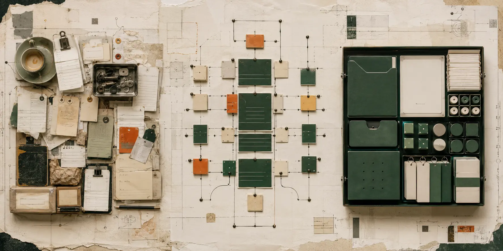

KALE’S GOALS
Find the pattern.Build it once.
Turn recurring small-business problems into practical products.

- 01
Notice
Recurring manual work.
- 02
Standardize
One reusable pattern.
- 03
Productize
Practical software. Customer control.